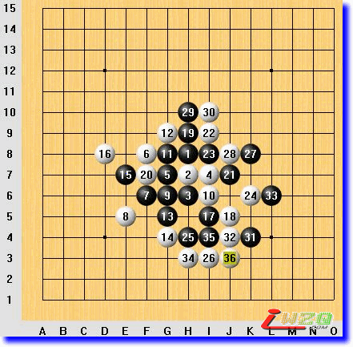
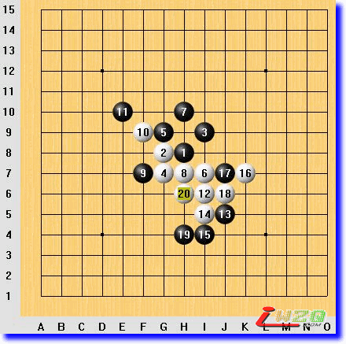
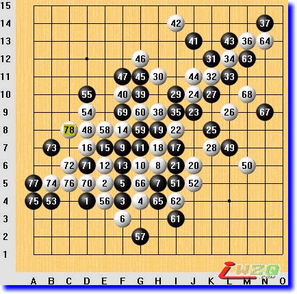
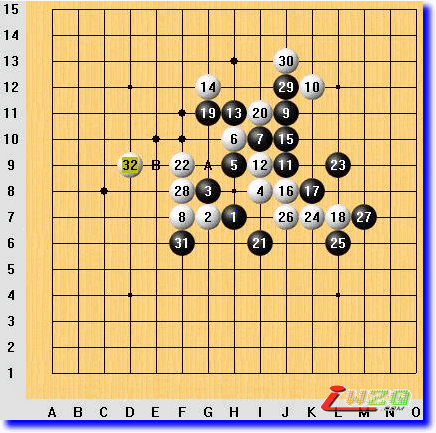
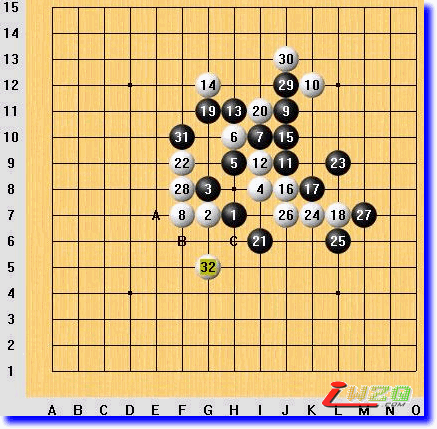
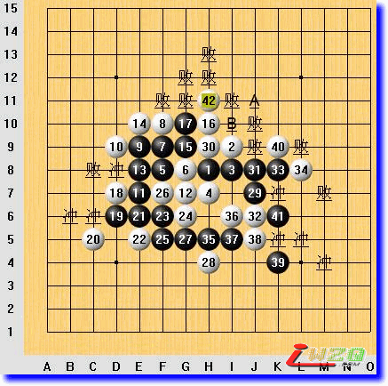

图说棋理（防守篇）
#1 图说棋理（防守篇） 作者：有志青年 发表时间：2008-9-7 13:14:23
清风[图说棋理]五子棋知识帖子目录 ShowPost.asp?ThreadID=4541
图说棋理（防守篇一）穿心防守

穿心防守，就是在对方密集子力群的内部防守，使对方的攻击力分散到四周，而不能使这个中央枢纽得到多次利用的一种防守方法。
本局无禁规则，中央寒星开局。
白18j5之后，黑19h9做杀（不很强，强招在k7），白20f7，即使用了穿心防守。
之后，黑方一连串的行棋力图快速解决战斗，进攻被白方一一化解，这叫“欲速则不达”。
黑33L6没有抓住要点，白棋避开黑方25-17活二的牵制，双三成杀。
#2 图说棋理（防守篇二）以攻为守 作者：有志青年 发表时间：2008-9-7 13:15:09

先手一般是用来进攻的，必要的时候可用来防守，利用暂时的先手来进攻，目的是破坏对方的棋形，就叫以攻为守。
无禁规则，中央丘月开局。
棋行至白6 I7，为常见下法。
黑7H10做三个活二，白棋采用以攻为守的策略，首先H7活三，黑9F7正确，白10F9继续以攻为守，黑11E10错误，以下白棋使用VCT（连续活三或夹杂冲四）而取胜。
以攻为守有时候是最有效的防守，实际操作上要做到收放自如，守住即可，防止形势更加恶化。
#3 图说棋理（防守篇三）防守的方向 作者：有志青年 发表时间：2008-9-7 13:16:26

作为全局或局部的劣势防守方，防守的方向取决于对方进攻的方向。在防住对方进攻的前提下，可以下在对自己有利的一方，如果只考虑对自己有利，而没有防住对方的后续进攻，就是犯了防守方向的错误。
本局无禁手规则，随意开局。
至白16，白棋嵌套八卦，防守重复，不太满意。
至白28，白棋续补阵型，可以看出白方是防守型的，黑方以进攻为主。
黑31破阵。至黑47，白方稍有喘息，白48釜底抽薪改善右下方形势。黑方立即对右下方白棋形势加以破坏后转向左方，53做棋偏缓，55、57两手棋的防守方向出现问题，白58一招致命。
本篇思考题：黑55、57出现防守方向的问题是什么心态造成的？应该怎样避免？
说是个防守方向问题，其实也是计算力问题，如果没计算到有那样的杀，黑棋包抄封锁、分割阻断的思路也是对的
白58这手棋选点的技巧就是引招与含招相结合。
引招，就是为了后续进攻而走的活三。
含招，就是为了接下来的vcf而走的做棋。
白58符合引、含同时形成的条件，但是黑棋有个眠三可以用冲四的绝对先手来防御。
本局棋白方取胜的关键就在与黑方冲四后破坏了白方引、含同时形成后的效果，但是同时也增加了白棋的一个眠三，一减一增，白棋的棋形依然足以成杀。
#4 图说棋理（防守篇四）降低进攻级别 作者：有志青年 发表时间：2008-9-7 13:17:59

各种进攻手段的级别是不同的。进攻级别按顺序来说是：
第一级：“伸招（冲四）”和“VCF（连续冲四取胜）”；第二级：“引招（活三）”、“VCT（连续活三或夹杂冲四取胜，但其中至少有一步是活三）”、“示招（做四三）”和“含招（做VCF）”；第三级：做VCT；第四级：VC2；第五级：其他进攻性做棋。
在防守中，努力降低对方的进攻级别，就能为自己赢得机会。
本局棋黑21活三后（见7楼图），如果白棋防守E点，那么黑棋A点活三后，即使白棋有冲四后乘手反三，但黑棋按BCD的顺序，是一个VCF进攻，进攻级别高于白棋；如果白棋防守B点，那么黑棋按ACD的顺序进攻，是一个VCT，那么白棋冲四后乘手反三，或者F点挡活三同时示招，同级别进攻先于黑方，就能夺取先手。请看实战（本图），白22B点防守，黑23因为不熟悉进攻级别理论，进攻中丢失先手，白方取得主动，至白32，白棋F11点形成示招，AB顺序为含招，示含同时形成，成杀。
黑31若反向防守，白32G5，这样AB两点顺序为含招，C点为双引（双活三），含招同时造就双引，成杀。
白方第22手棋使用了“降低对方进攻级别”的防守理论，是这盘棋的功臣。希望大家掌握进攻级别知识，不断提高五子棋理论水平。

变化参考图
中间过程图
#5 图说棋理（防守篇五）守其必争 作者：有志青年 发表时间：2008-9-7 13:18:39

在下棋过程中，攻防双方都需要不断分析局势，做到知己知彼，这就是“审局”。审局有很多技巧和经验，审局结果准确才能保证采取的战略战术正确。我们来看一局棋。
本局棋经过一番激烈对抗后，黑41挡白棋眠三，同时做出两个眠三，貌似很凶恶，但是稍加理智分析就会明白，黑方做出的仅仅是个VCT，不管什么样的进攻次序，其进攻级别不会高于VCT，鉴于此分析结果，白方42非常主动，在上面挡黑棋眠三同时做出了VCF。再仔细看会发现，不仅仅是一个VCF，似乎有很多种杀法，这时候经验不足的棋手往往在发现一个VCF之后就会在这个VCF的众多防点中随机选择一个，理由是“别的不用想，VCF必须挡”，VCF必须防守没错，但是防点不止一个，在选择防点的时候一定要分析进攻方多种杀法是不是各自独立的，也就是看有没有共用的活二或者眠三，如果没有，那这一步进攻就没有有效防守了；如果有共用的资源，那么防住这个共用资源就是抓住了要害，就是有效防守。在现在的局面应该下，白棋的各种杀法必须共用26-6-30这个眠三，所以黑棋只有A、B两点可供选择。当然，黑棋还可以冲四，但是冲过后还必须回过头来处理这里。实战黑方防守G12，就是犯了没有抓住多杀共用资源这一要害来防守，失败！